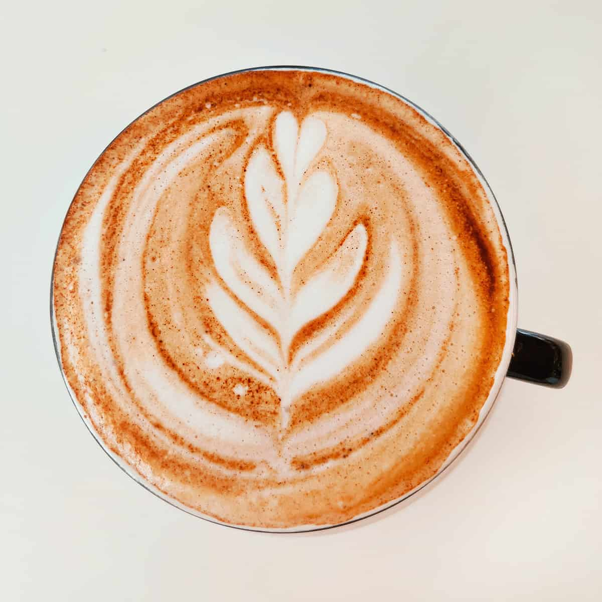
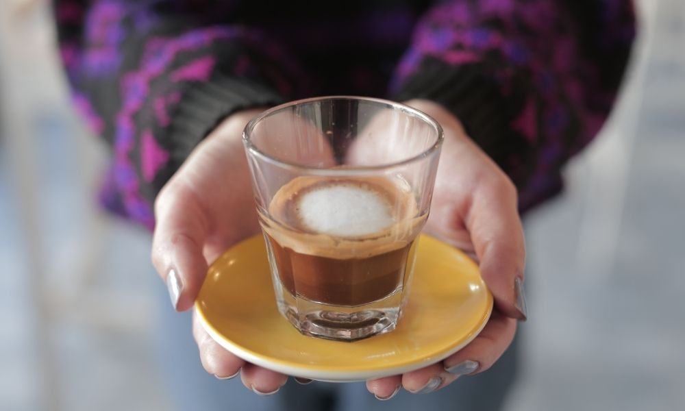
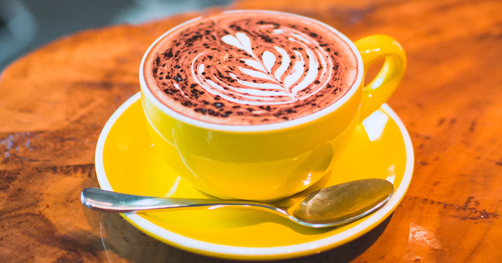
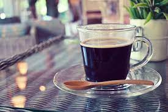
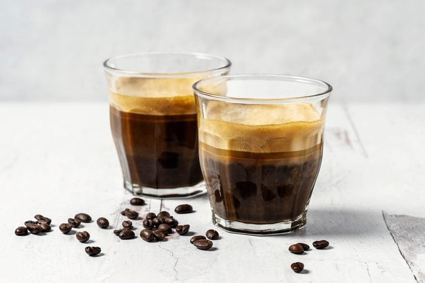
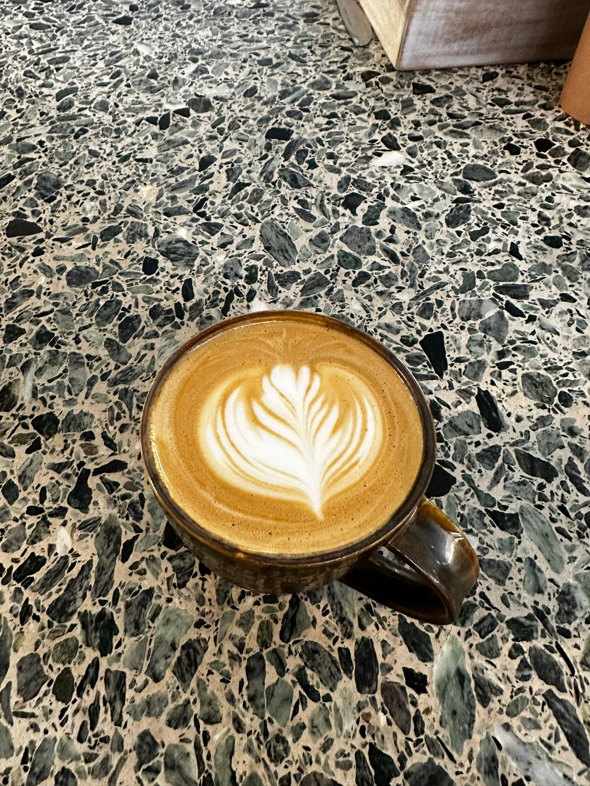

Distintos tipos de cafe
El cafe es una bebida diaria en la rutina de muchas personas. Es mi bebida caliente preferida y ademas soy barista asi que trabajo con cafe todos los dias.

Latte
Lleva una o dos medidas de espresso, mucha leche vaporizada y una última y fina capa de espuma de leche por encima.
Cappuccino
Un cappuccino se compone de 125 ml de leche y 25 ml de café espresso, en ocasiones se agrega cacao en polvo o canela según el gusto del consumidor.

Macchiato
El macchiato es una bebida preparada con café espresso al que se añade una pequeña cantidad de leche vaporizada o espuma de leche para permitir que el sabor del espresso siga destacando.
Mocha
Es una variante del café con leche a la que se le agrega una parte de chocolate, generalmente en forma de jarabe
Flat White
Combinación de microespuma de leche que se vierte sobre una medida doble de espresso. Esta microespuma se crea vaporizando la leche con aire para crear una textura suave y aterciopelada y un sabor cremoso.
Americano
Es un tipo de preparación de procedencia estadounidense, en la que se diluye el café espresso en agua caliente, reduciendo así la intensidad de su sabor. Se le puede agregar un poco de leche o dejarlo negro
Espresso
El espresso es una forma concentrada de café, se sirve en pequeñas medidas y suele ser la base de muchos otros tipos de bebidas de café, como el cappuccino, latte, americano y macchiato.
Mi favorito
Para concluir, hace dos anos que soy barista en UK y tomo todas las mananas latte con leche de avena
